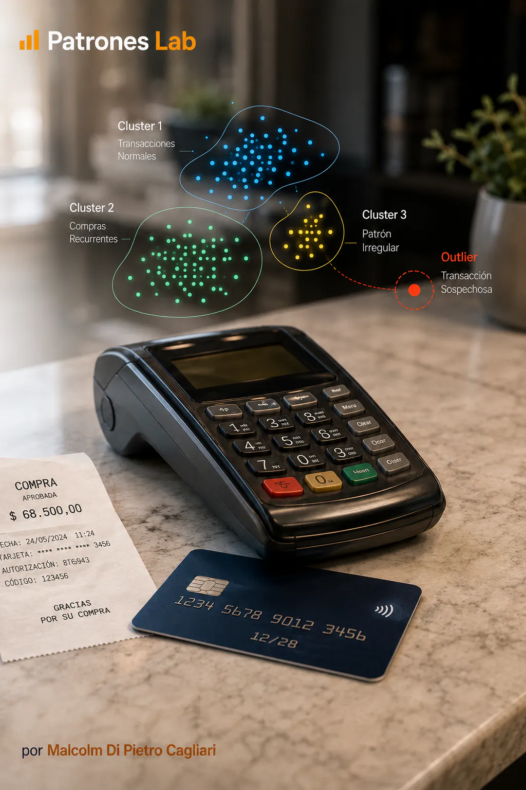
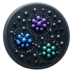

MACHINE LEARNING · PROJECT 08

Project 10 · Machine learning
Machine Learning Model · Fraud with DBSCAN
Analysis of credit card transactions to recognize behavioral patterns and detect atypical transactions. The project uses DBSCAN, an unsupervised learning algorithm that forms groups according to record density and identifies isolated transactions.

CONTEXT AND OBJECTIVE
The project works with credit card transaction records and analyzes the characteristics of each transaction. It uses this information to identify common behavior, analyze how similar transactions cluster and detect cases that differ from the rest.
These differences are studied using DBSCAN, a machine learning method that groups transactions according to the similarity of their characteristics. The procedure recognizes concentrations of similar transactions and highlights others that remain isolated.
The analysis seeks to understand these behaviors and identify atypical transactions for closer review. Each case can then be assessed with additional information about the transaction’s context to determine whether a specific investigation is needed.
MODEL AND ANALYSIS
TRANSACTION PREPARATION
The work uses variables recorded in the transactions, such as the amount and other characteristics of each operation. Data quality is reviewed, and the variables are prepared to compare records using consistent criteria.
The comparison is based on how similar the transactions are. To account for variables expressed in different numerical ranges, the project adjusts their scales before identifying groups.
IDENTIFYING GROUPS WITH DBSCAN
DBSCAN identifies areas with concentrations of transactions sharing similar characteristics and forms groups from those concentrations. It considers which records are sufficiently close to each other and how many similar transactions surround each one. Clustering therefore emerges from the distribution observed in the data.
The result distinguishes three situations:
- Core transactions: surrounded by several similar records, helping form the groups.
- Border transactions: close to a group of similar transactions.
- Isolated transactions: outside the identified groups and assigned the label -1.
ANALYSIS OF ATYPICAL TRANSACTIONS
The charts show how transactions are distributed and which characteristics records in each group share. They also allow groups to be compared with isolated cases and help recognize behaviors requiring closer review.
The label -1 indicates an atypical transaction according to the criteria used in the analysis. Its amount and other characteristics can be studied alongside additional information to assess whether it is an unusual purchase or a situation requiring investigation.
DELIVERY AND LEARNING
The project includes a Python notebook with data preparation, DBSCAN clustering and charts for exploring the results. This material allows transaction groups to be analyzed and atypical transactions to be selected for subsequent review.
When new transactions are added, the procedure can be repeated to observe how groups change and which cases appear atypical in the updated data. Keeping the same preparation criteria makes comparison between the two analyses easier.